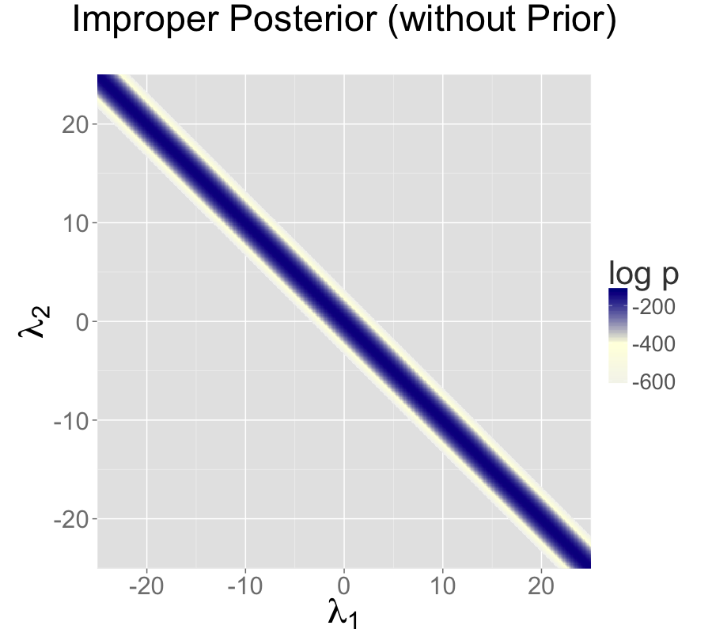
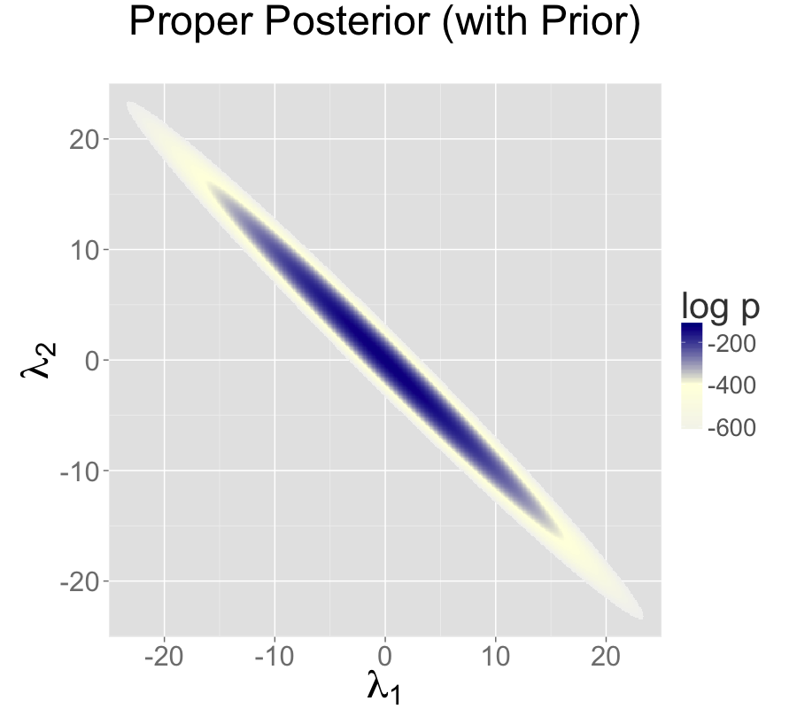
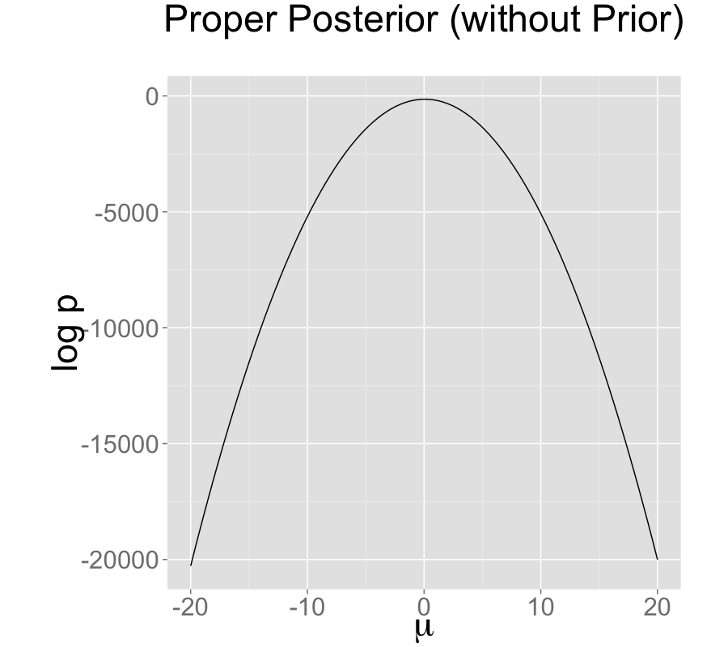

Problematic Posteriors
Mathematically speaking, with a proper posterior, one can do Bayesian inference and that’s that. There is not even a need to require a finite variance or even a finite mean—all that’s needed is a finite integral. Nevertheless, modeling is a tricky business and even experienced modelers sometimes code models that lead to improper priors. Furthermore, some posteriors are mathematically sound, but ill-behaved in practice. This chapter discusses issues in models that create problematic posterior inferences, either in general for Bayesian inference or in practice for Stan.
Collinearity of predictors in regressions
This section discusses problems related to the classical notion of identifiability, which lead to ridges in the posterior density and wreak havoc with both sampling and inference.
Examples of collinearity
Redundant intercepts
The first example of collinearity is an artificial example involving redundant intercept parameters.1
Suppose there are observations \(y_n\) for \(n \in \{1,\dotsc,N\}\), two intercept parameters \(\lambda_1\) and \(\lambda_2\), a scale parameter \(\sigma > 0\), and the data model \[ y_n \sim \textsf{normal}(\lambda_1 + \lambda_2, \sigma). \]
For any constant \(q\), the sampling density for \(y\) does not change if we add \(q\) to \(\lambda_1\) and subtract it from \(\lambda_2\), i.e., \[ p(y \mid \lambda_1, \lambda_2,\sigma) = p(y \mid \lambda_1 + q, \lambda_2 - q, \sigma). \]
The consequence is that an improper uniform prior \(p(\mu,\sigma) \propto 1\) leads to an improper posterior. This impropriety arises because the neighborhoods around \(\lambda_1 + q, \lambda_2 - q\) have the same mass no matter what \(q\) is. Therefore, a sampler would need to spend as much time in the neighborhood of \(\lambda_1=1\,000\,000\,000\) and \(\lambda_2=-1\,000\,000\,000\) as it does in the neighborhood of \(\lambda_1=0\) and \(\lambda_2=0\), and so on for ever more far-ranging values.
The marginal posterior \(p(\lambda_1,\lambda_2 \mid y)\) for this model is thus improper.2
The impropriety shows up visually as a ridge in the posterior density, as illustrated in the left-hand plot. The ridge for this model is along the line where \(\lambda_2 = \lambda_1 + c\) for some constant \(c\).
Contrast this model with a simple regression with a single intercept parameter \(\mu\) and data model \[ y_n \sim \textsf{normal}(\mu,\sigma). \] Even with an improper prior, the posterior is proper as long as there are at least two data points \(y_n\) with distinct values.
Ability and difficulty in IRT models
Consider an item-response theory model for students \(j \in 1{:}J\) with abilities \(\alpha_j\) and test items \(i \in 1{:}I\) with difficulties \(\beta_i\). The observed data are an \(I \times J\) array with entries \(y_{i, j} \in \{ 0, 1 \}\) coded such that \(y_{i, j} = 1\) indicates that student \(j\) answered question \(i\) correctly. The sampling distribution for the data is \[ y_{i, j} \sim \textsf{Bernoulli}(\operatorname{logit}^{-1}(\alpha_j - \beta_i)). \]
For any constant \(c\), the probability of \(y\) is unchanged by adding a constant \(c\) to all the abilities and subtracting it from all the difficulties, i.e., \[ p(y \mid \alpha, \beta) = p(y \mid \alpha + c, \beta - c). \]
This leads to a multivariate version of the ridge displayed by the regression with two intercepts discussed above.
General collinear regression predictors
The general form of the collinearity problem arises when predictors for a regression are collinear. For example, consider a linear regression data model \[ y_n \sim \textsf{normal}(x_n \beta, \sigma) \] for an \(N\)-dimensional observation vector \(y\), an \(N \times K\) predictor matrix \(x\), and a \(K\)-dimensional coefficient vector \(\beta\).
Now suppose that column \(k\) of the predictor matrix is a multiple of column \(k'\), i.e., there is some constant \(c\) such that \(x_{n,k} = c \, x_{n,k'}\) for all \(n\). In this case, the coefficients \(\beta_k\) and \(\beta_{k'}\) can covary without changing the predictions, so that for any \(d \neq 0\), \[ p(y \mid \ldots, \beta_k, \dotsc, \beta_{k'}, \dotsc, \sigma) = p(y \mid \ldots, d \beta_k, \dotsc, \frac{d}{c} \, \beta_{k'}, \dotsc, \sigma). \]
Even if columns of the predictor matrix are not exactly collinear as discussed above, they cause similar problems for inference if they are nearly collinear.
Multiplicative issues with discrimination in IRT
Consider adding a discrimination parameter \(\delta_i\) for each question in an IRT model, with data model \[ y_{i, j} \sim \textsf{Bernoulli}(\operatorname{logit}^{-1}(\delta_i(\alpha_j - \beta_i))). \] For any constant \(c \neq 0\), multiplying \(\delta\) by \(c\) and dividing \(\alpha\) and \(\beta\) by \(c\) produces the same likelihood, \[ p(y \mid \delta,\alpha,\beta) = p(y \mid c \delta, \frac{1}{c}\alpha, \frac{1}{c}\beta). \] If \(c < 0\), this switches the signs of every component in \(\alpha\), \(\beta\), and \(\delta\) without changing the density.
Softmax with \(K\) vs. \(K-1\) parameters
In order to parameterize a \(K\)-simplex (i.e., a \(K\)-vector with non-negative values that sum to one), only \(K - 1\) parameters are necessary because the \(K\)th is just one minus the sum of the first \(K - 1\) parameters, so that if \(\theta\) is a \(K\)-simplex, \[ \theta_K = 1 - \sum_{k=1}^{K-1} \theta_k. \]
The softmax function maps a \(K\)-vector \(\alpha\) of linear predictors to a \(K\)-simplex \(\theta = \texttt{softmax}(\alpha)\) by defining \[
\theta_k = \frac{\exp(\alpha_k)}{\sum_{k'=1}^K \exp(\alpha_{k'})}.
\]
The softmax function is many-to-one, which leads to a lack of identifiability of the unconstrained parameters \(\alpha\). In particular, adding or subtracting a constant from each \(\alpha_k\) produces the same simplex \(\theta\).
Mitigating the invariances
All of the examples discussed in the previous section allow translation or scaling of parameters while leaving the data probability density invariant. These problems can be mitigated in several ways.
Removing redundant parameters or predictors
In the case of the multiple intercepts, \(\lambda_1\) and \(\lambda_2\), the simplest solution is to remove the redundant intercept, resulting in a model with a single intercept parameter \(\mu\) and sampling distribution \(y_n \sim \textsf{normal}(\mu, \sigma)\). The same solution works for solving the problem with collinearity—just remove one of the columns of the predictor matrix \(x\).
Pinning parameters
The IRT model without a discrimination parameter can be fixed by pinning one of its parameters to a fixed value, typically 0. For example, the first student ability \(\alpha_1\) can be fixed to 0. Now all other student ability parameters can be interpreted as being relative to student 1. Similarly, the difficulty parameters are interpretable relative to student 1’s ability to answer them.
This solution is not sufficient to deal with the multiplicative invariance introduced by the question discrimination parameters \(\delta_i\). To solve this problem, one of the difficulty parameters, say \(\delta_1\), must also be constrained. Because it’s a multiplicative and not an additive invariance, it must be constrained to a non-zero value, with 1 being a convenient choice. Now all of the discrimination parameters may be interpreted relative to item 1’s discrimination.
The many-to-one nature of \(\texttt{softmax}(\alpha)\) is typically mitigated by pinning a component of \(\alpha\), for instance fixing \(\alpha_K = 0\). The resulting mapping is one-to-one from \(K-1\) unconstrained parameters to a \(K\)-simplex. This is roughly how simplex-constrained parameters are defined in Stan; see the reference manual chapter on constrained parameter transforms for a precise definition. The Stan code for creating a simplex from a \(K-1\)-vector can be written as
vector softmax_id(vector alpha) {
vector[num_elements(alpha) + 1] alphac1;
for (k in 1:num_elements(alpha)) {
alphac1[k] = alpha[k];
}
alphac1[num_elements(alphac1)] = 0;
return softmax(alphac1);
}Adding priors
So far, the models have been discussed as if the priors on the parameters were improper uniform priors.
A more general Bayesian solution to these invariance problems is to impose proper priors on the parameters. This approach can be used to solve problems arising from either additive or multiplicative invariance.
For example, normal priors on the multiple intercepts, \[ \lambda_1, \lambda_2 \sim \textsf{normal}(0,\tau), \] with a constant scale \(\tau\), ensure that the posterior mode is located at a point where \(\lambda_1 = \lambda_2\), because this minimizes \(\log \textsf{normal}(\lambda_1 \mid 0,\tau) + \log \textsf{normal}(\lambda_2 \mid 0,\tau)\).3
The following plots show the posteriors for two intercept parameterization without prior, two intercept parameterization with standard normal prior, and one intercept reparameterization without prior. For all three cases, the posterior is plotted for 100 data points drawn from a standard normal.
The two intercept parameterization leads to an improper prior with a ridge extending infinitely to the northwest and southeast.

Adding a standard normal prior for the intercepts results in a proper posterior.

The single intercept parameterization with no prior also has a proper posterior.

The addition of a prior to the two intercepts model is shown in the second plot; the final plot shows the result of reparameterizing to a single intercept.
An alternative strategy for identifying a \(K\)-simplex parameterization \(\theta = \texttt{softmax}(\alpha)\) in terms of an unconstrained \(K\)-vector \(\alpha\) is to place a prior on the components of \(\alpha\) with a fixed location (that is, specifically avoid hierarchical priors with varying location). Unlike the approaching of pinning \(\alpha_K = 0\), the prior-based approach models the \(K\) outcomes symmetrically rather than modeling \(K-1\) outcomes relative to the \(K\)-th. The pinned parameterization, on the other hand, is usually more efficient statistically because it does not have the extra degree of (prior constrained) wiggle room.
Vague, strongly informative, and weakly informative priors
Care must be used when adding a prior to resolve invariances. If the prior is taken to be too broad (i.e., too vague), the resolution is in theory only, and samplers will still struggle.
Ideally, a realistic prior will be formulated based on substantive knowledge of the problem being modeled. Such a prior can be chosen to have the appropriate strength based on prior knowledge. A strongly informative prior makes sense if there is strong prior information.
When there is not strong prior information, a weakly informative prior strikes the proper balance between controlling computational inference without dominating the data in the posterior. In most problems, the modeler will have at least some notion of the expected scale of the estimates and be able to choose a prior for identification purposes that does not dominate the data, but provides sufficient computational control on the posterior.
Priors can also be used in the same way to control the additive invariance of the IRT model. A typical approach is to place a strong prior on student ability parameters \(\alpha\) to control scale simply to control the additive invariance of the basic IRT model and the multiplicative invariance of the model extended with a item discrimination parameters; such a prior does not add any prior knowledge to the problem. Then a prior on item difficulty can be chosen that is either informative or weakly informative based on prior knowledge of the problem.
Label switching in mixture models
Where collinearity in regression models can lead to infinitely many posterior maxima, swapping components in a mixture model leads to finitely many posterior maxima.
Mixture models
Consider a normal mixture model with two location parameters \(\mu_1\) and \(\mu_2\), a shared scale \(\sigma > 0\), a mixture ratio \(\theta \in [0,1]\), and data model \[ p(y \mid \theta,\mu_1,\mu_2,\sigma) = \prod_{n=1}^N \big( \theta \, \textsf{normal}(y_n \mid \mu_1,\sigma) + (1 - \theta) \, \textsf{normal}(y_n \mid \mu_2,\sigma) \big). \] The issue here is exchangeability of the mixture components, because \[ p(\theta,\mu_1,\mu_2,\sigma \mid y) = p\big((1-\theta),\mu_2,\mu_1,\sigma \mid y\big). \] The problem is exacerbated as the number of mixture components \(K\) grows, as in clustering models, leading to \(K!\) identical posterior maxima.
Convergence monitoring and effective sample size
The analysis of posterior convergence and effective sample size is also difficult for mixture models. For example, the \(\hat{R}\) convergence statistic reported by Stan and the computation of effective sample size are both compromised by label switching. The problem is that the posterior mean, a key ingredient in these computations, is affected by label switching, resulting in a posterior mean for \(\mu_1\) that is equal to that of \(\mu_2\), and a posterior mean for \(\theta\) that is always 1/2, no matter what the data are.
Some inferences are invariant
In some sense, the index (or label) of a mixture component is irrelevant. Posterior predictive inferences can still be carried out without identifying mixture components. For example, the log probability of a new observation does not depend on the identities of the mixture components. The only sound Bayesian inferences in such models are those that are invariant to label switching. Posterior means for the parameters are meaningless because they are not invariant to label switching; for example, the posterior mean for \(\theta\) in the two component mixture model will always be 1/2.
Highly multimodal posteriors
Theoretically, this should not present a problem for inference because all of the integrals involved in posterior predictive inference will be well behaved. The problem in practice is computation.
Being able to carry out such invariant inferences in practice is an altogether different matter. It is almost always intractable to find even a single posterior mode, much less balance the exploration of the neighborhoods of multiple local maxima according to the probability masses. In Gibbs sampling, it is unlikely for \(\mu_1\) to move to a new mode when sampled conditioned on the current values of \(\mu_2\) and \(\theta\). For HMC and NUTS, the problem is that the sampler gets stuck in one of the two “bowls” around the modes and cannot gather enough energy from random momentum assignment to move from one mode to another.
Even with a proper posterior, all known sampling and inference techniques are notoriously ineffective when the number of modes grows super-exponentially as it does for mixture models with increasing numbers of components.
Hacks as fixes
Several hacks (i.e., “tricks”) have been suggested and employed to deal with the problems posed by label switching in practice.
Parameter ordering constraints
One common strategy is to impose a constraint on the parameters that identifies the components. For instance, we might consider constraining \(\mu_1 < \mu_2\) in the two-component normal mixture model discussed above. A problem that can arise from such an approach is when there is substantial probability mass for the opposite ordering \(\mu_1 > \mu_2\). In these cases, the posteriors are affected by the constraint and true posterior uncertainty in \(\mu_1\) and \(\mu_2\) is not captured by the model with the constraint. In addition, standard approaches to posterior inference for event probabilities is compromised. For instance, attempting to use \(M\) posterior samples to estimate \(\Pr[\mu_1 > \mu_2]\), will fail, because the estimator \[ \Pr[\mu_1 > \mu_2] \approx \sum_{m=1}^M \textrm{I}\left(\mu_1^{(m)} > \mu_2^{(m)}\right) \] will result in an estimate of 0 because the posterior respects the constraint in the model.
Initialization around a single mode
Another common approach is to run a single chain or to initialize the parameters near realistic values.4
This can work better than the hard constraint approach if reasonable initial values can be found and the labels do not switch within a Markov chain. The result is that all chains are glued to a neighborhood of a particular mode in the posterior.
Component collapsing in mixture models
It is possible for two mixture components in a mixture model to collapse to the same values during sampling or optimization. For example, a mixture of \(K\) normals might devolve to have \(\mu_i = \mu_j\) and \(\sigma_i = \sigma_j\) for \(i \neq j\).
This will typically happen early in sampling due to initialization in MCMC or optimization or arise from random movement during MCMC. Once the parameters match for a given draw \((m)\), it can become hard to escape because there can be a trough of low-density mass between the current parameter values and the ones without collapsed components.
It may help to use a smaller step size during warmup, a stronger prior on each mixture component’s membership responsibility. A more extreme measure is to include additional mixture components to deal with the possibility that some of them may collapse.
In general, it is difficult to recover exactly the right \(K\) mixture components in a mixture model as \(K\) increases beyond one (yes, even a two-component mixture can have this problem).
Posteriors with unbounded densities
In some cases, the posterior density grows without bounds as parameters approach certain poles or boundaries. In such, there are no posterior modes and numerical stability issues can arise as sampled parameters approach constraint boundaries.
Mixture models with varying scales
One such example is a binary mixture model with scales varying by component, \(\sigma_1\) and \(\sigma_2\) for locations \(\mu_1\) and \(\mu_2\). In this situation, the density grows without bound as \(\sigma_1 \rightarrow 0\) and \(\mu_1 \rightarrow y_n\) for some \(n\); that is, one of the mixture components concentrates all of its mass around a single data item \(y_n\).
Beta-binomial models with skewed data and weak priors
Another example of unbounded densities arises with a posterior such as \(\textsf{beta}(\phi \mid 0.5,0.5)\), which can arise if seemingly weak beta priors are used for groups that have no data. This density is unbounded as \(\phi \rightarrow 0\) and \(\phi \rightarrow 1\). Similarly, a Bernoulli data model coupled with a “weak” beta prior, leads to a posterior \[\begin{align*} p(\phi \mid y) &\propto \textsf{beta}(\phi \mid 0.5,0.5) \times \prod_{n=1}^N \textsf{Bernoulli}(y_n \mid \phi) \\ &= \textsf{beta}\left(\phi \,\middle|\, 0.5 + \sum_{n=1}^N y_n, 0.5 + N - \sum_{n=1}^N y_n\right). \end{align*}\]
If \(N = 9\) and each \(y_n = 1\), the posterior is \(\textsf{beta}(\phi \mid 9.5,0,5)\). This posterior is unbounded as \(\phi \rightarrow 1\). Nevertheless, the posterior is proper, and although there is no posterior mode, the posterior mean is well-defined with a value of exactly 0.95.
Constrained vs. unconstrained scales
Stan does not sample directly on the constrained \((0,1)\) space for this problem, so it doesn’t directly deal with unconstrained density values. Rather, the probability values \(\phi\) are logit-transformed to \((-\infty,\infty)\). The boundaries at 0 and 1 are pushed out to \(-\infty\) and \(\infty\) respectively. The Jacobian adjustment that Stan automatically applies ensures the unconstrained density is proper. The adjustment for the particular case of \((0,1)\) is \(\log \operatorname{logit}^{-1}(\phi) + \log \operatorname{logit}(1 - \phi)\).
There are two problems that still arise, though. The first is that if the posterior mass for \(\phi\) is near one of the boundaries, the logit-transformed parameter will have to sweep out long paths and thus can dominate the U-turn condition imposed by the no-U-turn sampler (NUTS). The second issue is that the inverse transform from the unconstrained space to the constrained space can underflow to 0 or overflow to 1, even when the unconstrained parameter is not infinite. Similar problems arise for the expectation terms in logistic regression, which is why the logit-scale parameterizations of the Bernoulli and binomial distributions are more stable.
Posteriors with unbounded parameters
In some cases, the posterior density will not grow without bound, but parameters will grow without bound with gradually increasing density values. Like the models discussed in the previous section that have densities that grow without bound, such models also have no posterior modes.
Separability in logistic regression
Consider a logistic regression model with \(N\) observed outcomes \(y_n \in \{ 0, 1 \}\), an \(N \times K\) matrix \(x\) of predictors, a \(K\)-dimensional coefficient vector \(\beta\), and data model \[ y_n \sim \textsf{Bernoulli}(\operatorname{logit}^{-1}(x_n \beta)). \] Now suppose that column \(k\) of the predictor matrix is such that \(x_{n,k} > 0\) if and only if \(y_n = 1\), a condition known as “separability.” In this case, predictive accuracy on the observed data continue to improve as \(\beta_k \rightarrow \infty\), because for cases with \(y_n = 1\), \(x_n \beta \rightarrow \infty\) and hence \(\operatorname{logit}^{-1}(x_n \beta) \rightarrow 1\).
With separability, there is no maximum to the likelihood and hence no maximum likelihood estimate. From the Bayesian perspective, the posterior is improper and therefore the marginal posterior mean for \(\beta_k\) is also not defined. The usual solution to this problem in Bayesian models is to include a proper prior for \(\beta\), which ensures a proper posterior.
Uniform posteriors
Suppose your model includes a parameter \(\psi\) that is defined on \([0,1]\) and is given a flat prior \(\textsf{uniform}(\psi \mid 0,1)\). Now if the data don’t tell us anything about \(\psi\), the posterior is also \(\textsf{uniform}(\psi \mid 0,1)\).
Although there is no maximum likelihood estimate for \(\psi\), the posterior is uniform over a closed interval and hence proper. In the case of a uniform posterior on \([0,1]\), the posterior mean for \(\psi\) is well-defined with value \(1/2\). Although there is no posterior mode, posterior predictive inference may nevertheless do the right thing by simply integrating (i.e., averaging) over the predictions for \(\psi\) at all points in \([0,1]\).
Sampling difficulties with problematic priors
With an improper posterior, it is theoretically impossible to properly explore the posterior. However, Gibbs sampling as performed by BUGS and JAGS, although still unable to properly sample from such an improper posterior, behaves differently in practice than the Hamiltonian Monte Carlo sampling performed by Stan when faced with an example such as the two intercept model discussed in the collinearity section and illustrated in the non-identifiable density plot.
Gibbs sampling
Gibbs sampling, as performed by BUGS and JAGS, may appear to be efficient and well behaved for this unidentified model, but as discussed in the previous subsection, will not actually explore the posterior properly.
Consider what happens with initial values \(\lambda_1^{(0)}, \lambda_2^{(0)}\). Gibbs sampling proceeds in iteration \(m\) by drawing \[\begin{align*} \lambda_1^{(m)} &\sim p(\lambda_1 \mid \lambda_2^{(m-1)}, \sigma^{(m-1)}, y) \\ \lambda_2^{(m)} &\sim p(\lambda_2 \mid \lambda_1^{(m)}, \sigma^{(m-1)}, y) \\ \sigma^{(m)} &\sim p(\sigma \mid \lambda_1^{(m)}, \lambda_2^{(m)}, y). \end{align*}\]
Now consider the draw for \(\lambda_1\) (the draw for \(\lambda_2\) is symmetric), which is conjugate in this model and thus can be done efficiently. In this model, the range from which the next \(\lambda_1\) can be drawn is highly constrained by the current values of \(\lambda_2\) and \(\sigma\). Gibbs will run quickly and provide seemingly reasonable inferences for \(\lambda_1 + \lambda_2\). But it will not explore the full range of the posterior; it will merely take a slow random walk from the initial values. This random walk behavior is typical of Gibbs sampling when posteriors are highly correlated and the primary reason to prefer Hamiltonian Monte Carlo to Gibbs sampling for models with parameters correlated in the posterior.
Hamiltonian Monte Carlo sampling
Hamiltonian Monte Carlo (HMC), as performed by Stan, is much more efficient at exploring posteriors in models where parameters are correlated in the posterior. In this particular example, the Hamiltonian dynamics (i.e., the motion of a fictitious particle given random momentum in the field defined by the negative log posterior) is going to run up and down along the valley defined by the potential energy (ridges in log posteriors correspond to valleys in potential energy). In practice, even with a random momentum for \(\lambda_1\) and \(\lambda_2\), the gradient of the log posterior is going to adjust for the correlation and the simulation will run \(\lambda_1\) and \(\lambda_2\) in opposite directions along the valley corresponding to the ridge in the posterior log density.
No-U-turn sampling
Stan’s default no-U-turn sampler (NUTS), is even more efficient at exploring the posterior (see Hoffman and Gelman 2014). NUTS simulates the motion of the fictitious particle representing the parameter values until it makes a U-turn, it will be defeated in most cases, as it will just move down the potential energy valley indefinitely without making a U-turn. What happens in practice is that the maximum number of leapfrog steps in the simulation will be hit in many of the iterations, causing a large number of log probability and gradient evaluations (1000 if the max tree depth is set to 10, as in the default). Thus sampling will appear to be slow. This is indicative of an improper posterior, not a bug in the NUTS algorithm or its implementation. It is simply not possible to sample from an improper posterior! Thus the behavior of HMC in general and NUTS in particular should be reassuring in that it will clearly fail in cases of improper posteriors, resulting in a clean diagnostic of sweeping out large paths in the posterior.
Here are results of Stan runs with default parameters fit to \(N=100\) data points generated from \(y_n \sim \textsf{normal}(0,1)\):
Two Scale Parameters, Improper Prior
Inference for Stan model: improper_stan
Warmup took (2.7, 2.6, 2.9, 2.9) seconds, 11 seconds total
Sampling took (3.4, 3.7, 3.6, 3.4) seconds, 14 seconds total
Mean MCSE StdDev 5% 95% N_Eff N_Eff/s R_hat
lp__ -5.3e+01 7.0e-02 8.5e-01 -5.5e+01 -5.3e+01 150 11 1.0
n_leapfrog__ 1.4e+03 1.7e+01 9.2e+02 3.0e+00 2.0e+03 2987 212 1.0
lambda1 1.3e+03 1.9e+03 2.7e+03 -2.3e+03 6.0e+03 2.1 0.15 5.2
lambda2 -1.3e+03 1.9e+03 2.7e+03 -6.0e+03 2.3e+03 2.1 0.15 5.2
sigma 1.0e+00 8.5e-03 6.2e-02 9.5e-01 1.2e+00 54 3.9 1.1
mu 1.6e-01 1.9e-03 1.0e-01 -8.3e-03 3.3e-01 2966 211 1.0Two Scale Parameters, Weak Prior
Warmup took (0.40, 0.44, 0.40, 0.36) seconds, 1.6 seconds total
Sampling took (0.47, 0.40, 0.47, 0.39) seconds, 1.7 seconds total
Mean MCSE StdDev 5% 95% N_Eff N_Eff/s R_hat
lp__ -54 4.9e-02 1.3e+00 -5.7e+01 -53 728 421 1.0
n_leapfrog__ 157 2.8e+00 1.5e+02 3.0e+00 511 3085 1784 1.0
lambda1 0.31 2.8e-01 7.1e+00 -1.2e+01 12 638 369 1.0
lambda2 -0.14 2.8e-01 7.1e+00 -1.2e+01 12 638 369 1.0
sigma 1.0 2.6e-03 8.0e-02 9.2e-01 1.2 939 543 1.0
mu 0.16 1.8e-03 1.0e-01 -8.1e-03 0.33 3289 1902 1.0One Scale Parameter, Improper Prior
Warmup took (0.011, 0.012, 0.011, 0.011) seconds, 0.044 seconds total
Sampling took (0.017, 0.020, 0.020, 0.019) seconds, 0.077 seconds total
Mean MCSE StdDev 5% 50% 95% N_Eff N_Eff/s R_hat
lp__ -54 2.5e-02 0.91 -5.5e+01 -53 -53 1318 17198 1.0
n_leapfrog__ 3.2 2.7e-01 1.7 1.0e+00 3.0 7.0 39 507 1.0
mu 0.17 2.1e-03 0.10 -3.8e-03 0.17 0.33 2408 31417 1.0
sigma 1.0 1.6e-03 0.071 9.3e-01 1.0 1.2 2094 27321 1.0On the top is the non-identified model with improper uniform priors and data model \(y_n \sim \textsf{normal}(\lambda_1 + \lambda_2, \sigma)\).
In the middle is the same data model as in top plus priors \(\lambda_k \sim \textsf{normal}(0,10)\).
On the bottom is an identified model with an improper prior, with data model \(y_n \sim \textsf{normal}(\mu,\sigma)\). All models estimate \(\mu\) at roughly 0.16 with low Monte Carlo standard error, but a high posterior standard deviation of 0.1; the true value \(\mu=0\) is within the 90% posterior intervals in all three models.
Examples: fits in Stan
To illustrate the issues with sampling from non-identified and only weakly identified models, we fit three models with increasing degrees of identification of their parameters. The posteriors for these models is illustrated in the non-identifiable density plot. The first model is the unidentified model with two location parameters and no priors discussed in the collinearity section.
data {
int N;
array[N] real y;
}
parameters {
real lambda1;
real lambda2;
real<lower=0> sigma;
}
transformed parameters {
real mu;
mu = lambda1 + lambda2;
}
model {
y ~ normal(mu, sigma);
}The second adds priors to the model block for lambda1 and lambda2 to the previous model.
lambda1 ~ normal(0, 10);
lambda2 ~ normal(0, 10);The third involves a single location parameter, but no priors.
data {
int N;
array[N] real y;
}
parameters {
real mu;
real<lower=0> sigma;
}
model {
y ~ normal(mu, sigma);
}All three of the example models were fit in Stan 2.1.0 with default parameters (1000 warmup iterations, 1000 sampling iterations, NUTS sampler with max tree depth of 10). The results are shown in the non-identified fits figure. The key statistics from these outputs are the following.
As indicated by
R_hatcolumn, all parameters have converged other than \(\lambda_1\) and \(\lambda_2\) in the non-identified model.The average number of leapfrog steps is roughly 3 in the identified model, 150 in the model identified by a weak prior, and 1400 in the non-identified model.
The number of effective samples per second for \(\mu\) is roughly 31,000 in the identified model, 1,900 in the model identified with weakly informative priors, and 200 in the non-identified model; the results are similar for \(\sigma\).
In the non-identified model, the 95% interval for \(\lambda_1\) is (-2300,6000), whereas it is only (-12,12) in the model identified with weakly informative priors.
In all three models, the simulated value of \(\mu=0\) and \(\sigma=1\) are well within the posterior 90% intervals.
The first two points, lack of convergence and hitting the maximum number of leapfrog steps (equivalently maximum tree depth) are indicative of improper posteriors. Thus rather than covering up the problem with poor sampling as may be done with Gibbs samplers, Hamiltonian Monte Carlo tries to explore the posterior and its failure is a clear indication that something is amiss in the model.
References
Footnotes
This example was raised by Richard McElreath on the Stan users group in a query about the difference in behavior between Gibbs sampling as used in BUGS and JAGS and the Hamiltonian Monte Carlo (HMC) and no-U-turn samplers (NUTS) used by Stan.↩︎
The marginal posterior \(p(\sigma \mid y)\) for \(\sigma\) is proper here as long as there are at least two distinct data points.↩︎
A Laplace prior (or an L1 regularizer for penalized maximum likelihood estimation) is not sufficient to remove this additive invariance. It provides shrinkage, but does not in and of itself identify the parameters because adding a constant to \(\lambda_1\) and subtracting it from \(\lambda_2\) results in the same value for the prior density.↩︎
Tempering methods may be viewed as automated ways to carry out such a search for modes, though most MCMC tempering methods continue to search for modes on an ongoing basis; see (Swendsen and Wang 1986; Neal 1996).↩︎